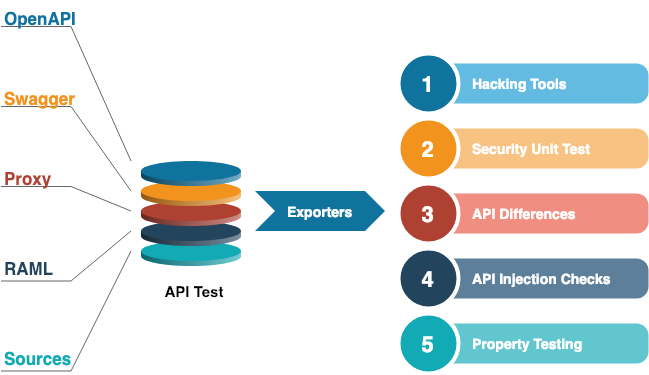

APICheck: The DevSecOps Toolset for REST APIs
1 Links:
2 Problema a resolver:
Un servicio Web es susceptible de exponer más información de la debida. Tal situación debe detectarse lo antes posible para poder remediarla, idealmente antes de que la response con información indebida llegue a su destino.
3 Solución del proyecto:
Crear un toolset que permita analizar las APIs expuestas, determinando si se ajustan a su especificación.
4 Casos de uso:
- Un equipo que desarrolla un servicio Web se vería beneficiado de recibir
informes de vulnerabilidades en su API de manera integrada con su ciclo de CI.
- Un servicio Web configurado en modo debug queda expuesto, permitiendo el
acceso indebido a terceros. Se precisa un sistema que alerte y/o corrija tal situación.
5 Características principales:
Puede integrarse en ciclos de CI/CD para analizar múltiples aspectos de la integridad de un API.
Puede integrarse en el ciclo request/response para bloquear peticiones indebidas al vuelo.
6 Arquitectura

7 Caso de uso
Es habitual la siguiente configuración:
Múltiples servicios Web tras un API gateway, que los expone al mundo exterior.
Uno de los servicios Web está mal configurado, en modo debug, exponiendo un
endpoint /debug que da acceso a montones de información jugosona.
Un usuario malicioso puede abusar este endpoint para conseguir acceso a un montón de datos sensibles.
8 Detección del endpoint /debug inseguro
Una herramienta de APICheck detecta el endpoint /debug y notifica el
problema.
9 a) Especificación OpenAPI como Fuente de Verdad
Una herramienta de APICheck puede parsear la especificación OpenAPI del servicio Web y compararla con la instancia activa. La herramienta informará de las discrepancias encontradas.
10 b) No se dispone de especificación; grabación de baseline contra la que realizar comparaciones
- @ T1, el proxy APICheck se usa para salvar una sesión contra el servicio
Web.
- El API accesible se deduce y almacena para que sirva como baseline.
- @ T2, el proxy APICheck se usa para guardar otra sesión contra el mismo
servicio Web.
- Las herramienta informa de las discrepancias que hubiera.
11 Uso offline
- Adecuado para integración en workflows de CI/CD.
- Dada una request válida para el servicio Web, un número de herramientas
pueden comprobar diferentes tipos de vulnerabilidades, tales como
SQL Injectioncon sqlmap,XSS, etc.
12 Uso online
- Se puede monitorizar la response antes de que alcance su destino, y bloquearla si se detectan datos inapropiados.
13 Comprobación de Consistency de un API
Una herramienta de APICheck puede generar requests a partir de la especificación OpenAPI de un API, buscando sistemáticamente los corner cases y siendo tan exhaustivo como se le pida («mala baba» parametrizada).
14 Reproducción del baseline en producción
El comportamiento baseline de un servicio Web puede ser obtenido durante la fase de testeo, y las requests realizadas en aquel momento pueden ser reenviadas al servicio Web del entorno productivo en un tiempo posterior Así, se puede comprobar que las responses que devuelve el servicio Web son consistentes con lo esperado.
15 Tokenización de información en la response al vuelo
16 Analítica online
Una herramienta APICheck que detecta cabeceras anómalas en la request al vuelo.
17 Reenvío a herramientas third-party
Una herramienta APICheck que reenvía requests///responses a =burp=/=zapp=/ sin tener que duplicar las susodichas requests//responses.
18 APICheck es data-centric
19 A explorar
responses múltiples
Enviar de la misma request a un endpoint y comprobar que la respuesta se
mantiene a lo largo del tiempo, por ejemplo, /config, de manera que los
cambios en la configuración del servicio no pasen desapercibidos.